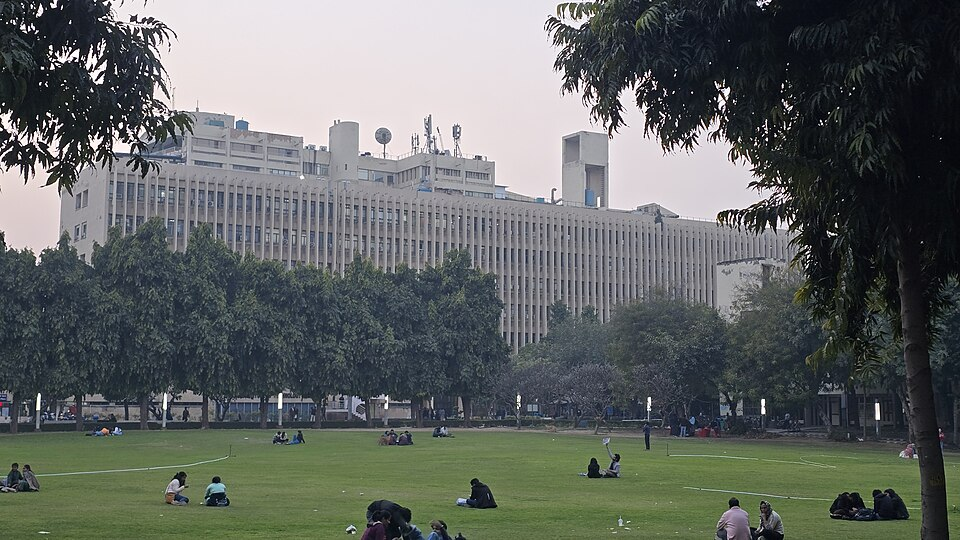
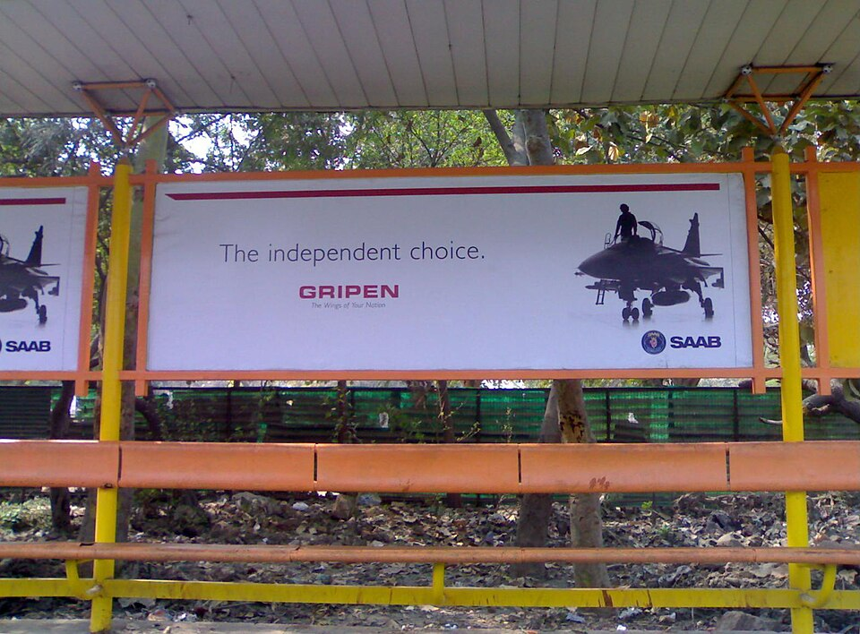
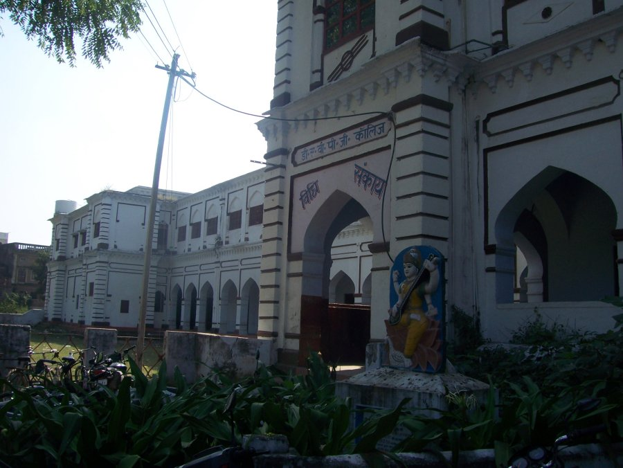

अंतरराष्ट्रीय
अंतरराष्ट्रीयसऊदी अरब की राजधानी रियाद पर हूती विद्रोहियों का हमला, दो भारतीय घायल
सऊदी अरब की राजधानी रियाद में हूती विद्रोहियों के हमले में दो भारतीयों समेत 11 लोग घायल हो गए हैं। सऊदी में भारतीय दूतावास ने नागरिकों से सतर्क रहने की अपील की है।
ताज़ा ख़बरें
 राष्ट्रीय
राष्ट्रीयगोवा चुनाव 2027: कांग्रेस ने विपक्षी दलों से गठबंधन और उम्मीदवारों के चयन पर बढ़ाई रफ्तार
गोवा विधानसभा चुनाव 2027 की तैयारियों के तहत कांग्रेस ने जीएफपी और आरजीपी के साथ गठबंधन की बातचीत तेज कर दी है। दिल्ली में हुई बैठक में उम्मीदवारों के जल्द चयन और भाजपा सरकार के खिलाफ साझा अभियान चलाने पर चर्चा हुई।
 राष्ट्रीय
राष्ट्रीययूपी विधानसभा चुनाव 2027: समाजवादी पार्टी ने जारी की पांच उम्मीदवारों की पहली सूची
उत्तर प्रदेश विधानसभा चुनाव 2027 के लिए समाजवादी पार्टी ने पांच उम्मीदवारों की पहली सूची जारी कर दी है. इस सूची में उन सीटों पर भी प्रत्याशी घोषित किए गए हैं, जिन पर कांग्रेस पार्टी अपनी दावेदारी जता रही थी.
राष्ट्रीयकेंद्र सरकार ने दलाई लामा को लुटियंस जोन में आवंटित किया सरकारी बंगला
केंद्र सरकार ने तिब्बती आध्यात्मिक गुरु दलाई लामा को नई दिल्ली के लुटियंस इलाके में पंडित रविशंकर शुक्ल लेन पर टाइप-7 सरकारी बंगला आवंटित किया है।
राष्ट्रीयपूर्वी दिल्ली के प्रीत विहार में युवती से सामूहिक दुष्कर्म, तीन गिरफ्तार
दिल्ली के प्रीत विहार इलाके में एक कैफे में 22 वर्षीय युवती के साथ सामूहिक दुष्कर्म का मामला सामने आया है। पुलिस ने इस सिलसिले में तीन लोगों को गिरफ्तार किया है, जबकि तीन अन्य आरोपी अभी फरार हैं।
अंतरराष्ट्रीयसोनिया गांधी का इटली स्थित पैतृक आवास सिख कारोबारी सुखदेव सिंह कंग ने खरीदा
कांग्रेस की वरिष्ठ नेता सोनिया गांधी का इटली में स्थित घर सिख कारोबारी सुखदेव सिंह कंग ने खरीद लिया है। बीबीसी की एक रिपोर्ट में यह जानकारी सामने आई है।
 राष्ट्रीय
राष्ट्रीयमदुरै पहाड़ी पर दीपथून दीप जलाने को लेकर विवाद, सुप्रीम कोर्ट के आदेश पर टकटकी
तमिलनाडु के मदुरै में कार्तिगई दीपम के दौरान थिरुपरनकुंद्रम पहाड़ी पर दीपथून पर दीप जलाने को लेकर विवाद खड़ा हो गया है। सुप्रीम कोर्ट की अनुमति के बाद भी दीप न जलाए जाने पर हिंदू संगठनों ने आपत्ति जताई है।
राष्ट्रीयपंजाब के लुधियाना ज़िले में स्थित है 'इराक़' नाम का यह अनोखा गांव
पंजाब के लुधियाना ज़िले में बसा 'इराक़' नाम का गांव अपने अनूठे नाम और पीढ़ियों से चली आ रही लोक-कथा के कारण अक्सर लोगों का ध्यान आकर्षित करता है।
राष्ट्रीयतमिलनाडु: सुप्रीम कोर्ट के आदेश के बावजूद पहाड़ी पर नहीं जला दीपक, प्रदर्शन
तमिलनाडु के तिरुपरनकुंद्रम पहाड़ी पर कार्तिगई दीपम के मौके पर सुप्रीम कोर्ट के आदेश के बाद भी चोटी पर दीपक नहीं जलाए जाने पर हिंदू संगठनों ने विरोध प्रदर्शन किया। पुलिस ने 50 से अधिक लोगों को हिरासत में लिया।
 राष्ट्रीय
राष्ट्रीयपंजाब चुनाव: शिरोमणि अकाली दल और बीजेपी ने मिलाया हाथ, एनडीए में वापसी
शिरोमणि अकाली दल और बीजेपी ने आगामी पंजाब विधानसभा चुनाव मिलकर लड़ने का ऐलान किया है। करीब छह साल बाद अकाली दल की एनडीए में वापसी हुई है।
 राष्ट्रीय
राष्ट्रीयईंधन कम होने के कारण गोवा-मुंबई फ्लाइट को सूरत में उतारा गया
गोवा से मुंबई जा रही एयर इंडिया एक्सप्रेस की एक उड़ान को ईंधन की कमी के चलते सूरत की ओर मोड़ना पड़ा। विमान में 142 यात्री सवार थे और सभी सुरक्षित हैं। अभिनेता अनुपम खेर भी इसी फ्लाइट में थे।
राष्ट्रीयअमृतसर में पुरानी रंजिश के चलते फायरिंग, बुजुर्ग महिला की मौत और युवक घायल
पंजाब के अमृतसर में पुरानी रंजिश के कारण बाइक सवार हमलावरों ने फायरिंग की। गोली एक युवक को लगते हुए पीछे खड़ी बुजुर्ग महिला को जा लगी, जिससे उनकी मौके पर ही मौत हो गई।
 खेल
खेलवैभव सूर्यवंशी ने एशिया कप में जड़ा ऐतिहासिक दोहरा शतक, महज 53 गेंदों में बनाए 204 रन
राइजिंग स्टार्स एशिया कप में भारत ए के बल्लेबाज वैभव सूर्यवंशी ने यूएई के खिलाफ मात्र 53 गेंदों में 204 रनों की ऐतिहासिक पारी खेली। उन्होंने लिस्ट ए क्रिकेट में सबसे तेज शतक, डेढ़ सौ और दोहरे शतक का रिकॉर्ड अपने नाम किया।
राष्ट्रीयरामदेव और धीरेंद्र शास्त्री के बीच राम-कृष्ण विवाद पर सुलह, बातचीत का दावा
योग गुरु रामदेव और बागेश्वर धाम के प्रमुख धीरेंद्र कृष्ण शास्त्री ने राम और कृष्ण की तुलना से जुड़े विवाद को बातचीत के बाद सुलझा लिया है।
राष्ट्रीयरामदेव ने दी सफाई, कहा- धीरेंद्र शास्त्री मेरे बच्चे जैसे, डांट को प्यार से स्वीकारा
योगगुरु रामदेव ने धीरेंद्र शास्त्री पर दिए अपने बयान पर सफाई दी है। उन्होंने कहा कि बागेश्वर बाबा उनके छोटे भाई जैसे हैं और उनकी डांट को उन्होंने बड़प्पन दिखाते हुए स्वीकार किया है।
राष्ट्रीयफिल्म 'हनुमान अंश' के मुख्य अभिनेता शोभिनव सत्य को मिली थी मात्र एक लाख रुपये फीस
कम बजट में बनकर करीब 451 करोड़ रुपये की कमाई करने वाली फिल्म 'हनुमान अंश' के लीड एक्टर शोभिनव सत्य ने खुलासा किया है कि उन्हें फिल्म के लिए सिर्फ एक लाख रुपये फीस मिली थी।
राष्ट्रीयमुंबई मॉल मारपीट मामले में किरीट सोमैया के आरोपों पर मदरसे का जवाब
मुंबई के फीनिक्स मॉल गार्डन में कपल के साथ मारपीट की घटना के बाद बीजेपी नेता किरीट सोमैया ने पास के मदरसे पर आरोप लगाए थे, जिसे प्रिंसिपल ने खारिज किया है।
अंतरराष्ट्रीयपाकिस्तान के सिंध प्रांत में नए प्रशासनिक सूबे बनाने की योजना के खिलाफ प्रदर्शन
पाकिस्तान के सिंध प्रांत में नए सूबे बनाने की प्रस्तावित योजना के खिलाफ हजारों लोग सड़कों पर उतर आए हैं। कराची समेत कई शहरों में प्रदर्शन कर रहे समूहों ने सिंध के विभाजन का विरोध किया है।
अंतरराष्ट्रीयरूस-यूक्रेन युद्ध में फंसे भारतीय मूल के युवक की वापसी पर सुप्रीम कोर्ट का निर्देश
रूस की सेना में शामिल भारतीय मूल के युवक को वापस लाने के लिए दायर याचिका पर सुप्रीम कोर्ट ने केंद्र सरकार से सभी विकल्प तलाशने को कहा है। सरकार ने कोर्ट को बताया कि युवक ने रूसी नागरिकता ले ली है, जिससे उसकी भूमिका सीमित है।
 अंतरराष्ट्रीय
अंतरराष्ट्रीयनेपाल के पीएम बालेन शाह की दिल्ली यात्रा से मजबूत हुए भारत-नेपाल संबंध
नेपाल के प्रधानमंत्री बालेन शाह की नई दिल्ली यात्रा के दौरान दोनों देशों ने द्विपक्षीय संबंधों को मजबूत करने पर जोर दिया। भारत ने नेपाल के लिए 15,000 करोड़ रुपये के विकास सहायता पैकेज की घोषणा की है।
राष्ट्रीयभारत में सीजेपी आंदोलन की वर्तमान स्थिति और राजनीतिक प्रभाव
मई 2026 में शुरू हुआ सीजेपी आंदोलन शिक्षा मंत्री के इस्तीफ़े के बाद अब ठंडा पड़ता नज़र आ रहा है। राजनीतिक विश्लेषक इसे एक व्यापक वैचारिक कार्यक्रम के अभाव और रणनीतिक कमियों से जोड़कर देख रहे हैं।

टेकIIT दिल्ली ने AI इंजीनियरिंग प्रोग्राम के लिए शुरू की आवेदन प्रक्रिया
IIT दिल्ली ने छह महीने के AI इंजीनियरिंग सर्टिफिकेट प्रोग्राम के लिए आवेदन प्रक्रिया शुरू कर दी है। योग्य उम्मीदवार 29 जनवरी 2027 तक ऑनलाइन आवेदन कर सकते हैं।

राष्ट्रीयभारतीय सेना ने सुरक्षा चिंताओं के चलते फेसबुक और स्नैपचैट समेत 87 मोबाइल ऐप्स पर लगाई रोक
भारतीय सेना ने डेटा सुरक्षा और संवेदनशील जानकारी के संभावित दुरुपयोग की चिंताओं के बीच अपने कर्मियों के लिए 87 मोबाइल एप्लिकेशन के इस्तेमाल पर प्रतिबंध लगा दिया है।
अंतरराष्ट्रीयप्रधानमंत्री नरेंद्र मोदी ने नेपाल के प्रधानमंत्री बालेन शाह को उनके पिता की पुरानी तस्वीर भेंट की
प्रधानमंत्री नरेंद्र मोदी ने नेपाल के प्रधानमंत्री बालेन शाह को उनके पिता डॉ. राम नारायण शाह की गुजरात के दिनों की एक पुरानी तस्वीर और कई अन्य उपहार भेंट किए।
 टेक
टेकभारत में मेटा के कंटेंट प्रतिबंधों में भारी उछाल, दुनिया में दूसरे स्थान पर पहुंचा
साल 2026 की पहली छमाही में भारत में मेटा के कंटेंट प्रतिबंध 131 गुना बढ़कर 54.4 लाख पहुंच गए हैं। इसके साथ ही भारत इंडोनेशिया के बाद दुनिया में दूसरा सबसे बड़ा देश बन गया है।
व्यापारFSSAI ने बिसलेरी के पानी के सैंपल को असुरक्षित बताया, मुकदमा चलाने की मंजूरी दी
भारतीय खाद्य सुरक्षा एवं मानक प्राधिकरण ने बिसलेरी के पैकेज्ड ड्रिंकिंग वॉटर के एक सैंपल को असुरक्षित करार देते हुए कंपनी पर मुकदमा चलाने की मंजूरी दी है। बिसलेरी ने पानी को सुरक्षित बताते हुए अपना पक्ष रखा है।
राष्ट्रीयराजीव गांधी की सुरक्षा जानबूझकर हटाई गई थी, ताकि उनकी हत्या हो सके: राहुल गांधी
एक नए वीडियो में राहुल गांधी ने दावा किया है कि पूर्व प्रधानमंत्री राजीव गांधी की सुरक्षा जानबूझकर हटाई गई थी। सोनिया गांधी और प्रियंका गांधी ने भी इस दौरान अपनी पुरानी यादें साझा कीं।
राष्ट्रीयबेंगलुरु में शादी से इनकार करने पर युवती की हत्या, आरोपी प्रेमी गिरफ्तार
बेंगलुरु के एक लॉज में शादी की बात को लेकर हुए विवाद के बाद एक युवक ने कथित तौर पर अपनी प्रेमिका को तीसरी मंजिल की खिड़की से नीचे धक्का दे दिया, जिससे उसकी मौत हो गई। पुलिस ने आरोपी को गिरफ्तार कर लिया है।
राष्ट्रीयपंजाब विधानसभा चुनाव: बीजेपी और शिअद ने छह साल बाद की पुरानी गठबंधन की वापसी
पंजाब विधानसभा चुनाव से पहले बीजेपी और शिरोमणि अकाली दल ने अपने गठबंधन का ऐलान कर दिया है। कृषि कानूनों के विरोध में अकाली दल ने छह साल पहले नाता तोड़ लिया था।
राष्ट्रीयबिहार के लखीसराय में ट्रक और कार की टक्कर, पांच लोगों की मौत
बिहार के लखीसराय जिले में एक भीषण सड़क हादसे में पांच लोगों की मौत हो गई और चार अन्य घायल हो गए। घायलों को अस्पताल में भर्ती कराया गया है।
 राष्ट्रीय
राष्ट्रीयपंजाब विधानसभा चुनाव 2027 से पहले अकाली दल और बीजेपी में हुआ गठबंधन
पंजाब विधानसभा चुनाव 2027 से पहले बीजेपी और शिरोमणि अकाली दल ने छह साल पुराने अलगाव को खत्म करते हुए मंगलवार को नए राजनीतिक गठबंधन का ऐलान किया है।

राष्ट्रीयलखनऊ में प्रकाश पर्व पर आयोजित कार्यक्रम में शामिल हुए सीएम योगी
श्री गुरु नानक देव जी के 557वें प्रकाश पर्व पर लखनऊ के डीएवी पीजी कॉलेज में विशेष कार्यक्रम आयोजित हुआ, जिसमें मुख्यमंत्री योगी आदित्यनाथ ने हिस्सा लिया और उनके संदेशों को याद किया।
राष्ट्रीयनोएडा के जेवर में शादी वाले घर में सिलिंडर फटने से पिता-पुत्र की मौत
नोएडा के जेवर क्षेत्र के दयानतपुर गांव में सोमवार शाम एलपीजी सिलिंडर फटने से शादी की तैयारियों में जुटे परिवार के दो सदस्यों की मौत हो गई, जबकि दो अन्य झुलस गए।
राष्ट्रीयसमाजवादी पार्टी प्रमुख अखिलेश यादव का फेसबुक पेज बहाल, मेटा को दिया धन्यवाद
समाजवादी पार्टी के अध्यक्ष अखिलेश यादव का आधिकारिक फेसबुक पेज बहाल कर दिया गया है। पार्टी ने इसके लिए मेटा का आभार जताया है। इस पेज पर 90 लाख से अधिक फॉलोअर्स हैं।
 अंतरराष्ट्रीय
अंतरराष्ट्रीयमोहम्मद ज़ीशान अली बने पाकिस्तान के पहले अंतरिक्ष यात्री, चीन के मिशन में होंगे शामिल
पाकिस्तान के मोहम्मद ज़ीशान अली चीन के शेनझोउ-24 मिशन के तहत तियांगोंग अंतरिक्ष स्टेशन जाएंगे। वह अंतरिक्ष में जाने वाले पहले पाकिस्तानी और चीन के अंतरिक्ष स्टेशन पर पहुंचने वाले पहले विदेशी अंतरिक्ष यात्री होंगे।
 टेक
टेकइस्तीफे के 11 दिन बाद एनवीडिया के सीईओ पद पर लौटे जेनसन हुआंग
जासूसी के आरोपों और विवाहेतर संबंधों की जांच के बीच इस्तीफा देने वाले एनवीडिया के प्रमुख जेनसन हुआंग फिर से कंपनी के सीईओ बन गए हैं।
राष्ट्रीयपुणे में प्रेम विवाद के बाद सॉफ्टवेयर इंजीनियर ने की प्रेमिका की हत्या
पुणे के हिंजवड़ी इलाके में प्रेम संबंधों के विवाद के बाद एक सॉफ्टवेयर इंजीनियर ने कथित तौर पर अपनी प्रेमिका की पीट-पीटकर हत्या कर दी। वारदात के बाद आरोपी ने खुद पुलिस को फोन किया।
अंतरराष्ट्रीयपाकिस्तान में गंभीर ऊर्जा संकट, खैबर पख्तूनख्वा में एलपीजी के दाम आसमान पर
पाकिस्तान के खैबर पख्तूनख्वा प्रांत में प्राकृतिक गैस की कटौती और एलपीजी की आसमान छूती कीमतों से आम जनता परेशान है। लोग मजबूरी में लकड़ी और कोयला जलाने को विवश हैं।
 व्यापार
व्यापारभारत और पाकिस्तान में सोने के दाम, जानें किस देश में हुई ज्यादा गिरावट
नवंबर के मध्य में भारत और पाकिस्तान दोनों देशों में सोने की कीमतों में गिरावट दर्ज की गई। आंकड़ों के अनुसार, प्रतिशत के लिहाज से भारत में सोना पाकिस्तान की तुलना में अधिक सस्ता हुआ है।
 राष्ट्रीय
राष्ट्रीययूपी चुनाव: सपा और कांग्रेस के बीच सीट बंटवारे पर दूसरे दौर की बैठक शुरू
उत्तर प्रदेश विधानसभा चुनाव के लिए समाजवादी पार्टी और कांग्रेस के बीच सीट बंटवारे को लेकर दिल्ली में दूसरे दौर की बैठक शुरू हो गई है। दोनों दल जीतने की संभावना को आधार मानकर चर्चा कर रहे हैं।